人物背景
乌野高校
宫城县乌野町的县立高等学校，当年著名的“小巨人”宇内天满高中期间就读的学校，著名教练乌养一系的所属学校。
乌野高校和音驹高校既是互相的老对手，也是互相的老朋友，互相组织练习赛可以说是家常便饭，可惜一次都没有在正式比赛上一决胜负过。
横幅是：“飞吧”（飛べ）
武田一鉄（たけだ いってつ。刚刚就任的顾问，在排球方面没有经验，还在学习中。就任顾问初期，为了让排球部能接触到更多校外的强队不辞行苦地到处奔走，首先联络上了曾经的友队音驹的教练猫又教练，后以自己坚持不懈的热情说服了前著名教练乌养一系的孙子乌养系心担任排球部的教练。
为人十分感性，IH预选赛时，为社员们打气，并希望乌野高校再次展翅，让大家看见“古兵乌野的复活”。鼓励队员的话非常诗意。在技术指导上无法给与太多帮助，可经常在队员心情低落的时候给与精神指导。虽然看着平易近人，但严肃的时候也很吓人。
几个学校合宿训练时，经常被猫又教练拉去喝酒。
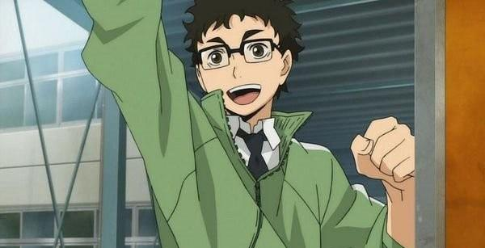
乌养繋心（うかい けいしん）。乌野高校排球部退役队员，是曾经率领强豪乌野的名将·乌养监督的孙子。虽然在校期间很少作为首发队员上场，但一直喜爱排球，毕业后组织了排球町内队。也因此想要珍藏青春的回忆不想再回到球场做教练。但后来被武田老师说服，答应指导乌野高校排球队的队员们直到与音驹比赛结束。之后被排球部成员的热情所吸引，希望能引导他们走上更高的舞台，正式成为教练。
执教理念相当开明，秉持爷爷乌养一系培养排球运动员的原则，喜欢大胆进攻，出奇制胜，希望队员能尝试更多不同的进攻和防守组合，并鼓励队员在比赛中使用全新的策略。
“排球，是要向上看的运动。”
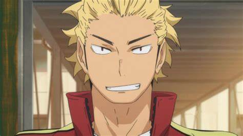
乌野高中一年级生：日向翔阳、影山飞雄、月岛萤、山口忠

日向翔阳为本作的主角，性格单纯、率直，身高虽矮小但运动神经发达，小时候在电视看到乌野高中的排球比赛，被一然身高矮小却拥有超强实力的「小巨人」球员所吸引，自此便就努力想成为和小巨人一样厉害的选手。在国中唯一一场比赛中，对上强豪北川第一中学的影山飞雄而惨败，日向誓言要打败影山，却和影山就读了同一所「乌野高中」。

月岛萤为队中唯一戴眼镜的成员，与山口忠小学三年级就认识，不但毒舌又性格孤僻，一开始对排球抱持着「只不过是社团活动」的心态，没有太认真，但经过多场比赛历练后，终于找到对排球的热情，成为队伍不可或缺的重要拦截手。山口忠小时候被欺负时被月岛解救，自此格外崇拜月岛，虽然是一年级成员中唯一一名非先发成员，但在某次比赛的发球失误中感到悔恨，从此不断钻研发球技术，在重要时刻往往能发挥得分价值。
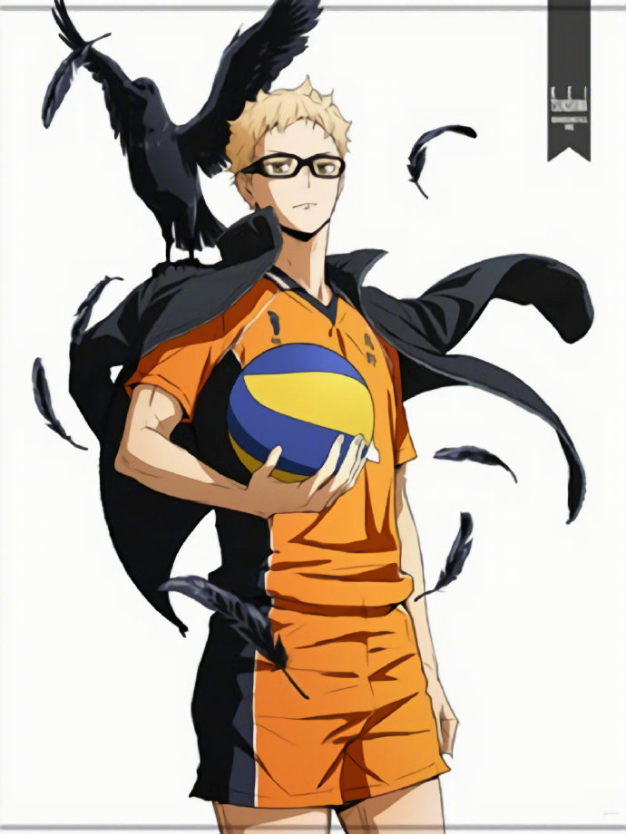
影山飞雄，日本动漫《排球少年！！》及其衍生作品中的角色，乌野高校排球部的二传手。他有着帅气的外表、过硬的实力、坚定如一的目标信念[1]。受爷爷的影响喜欢上排球，拥有超群的球感和控球能力，比谁都能敏锐地判断出敌方阵营动作的双眼和判断力，拥有“球场上的王者”名号。
国中时期的影山，单纯地执着于胜利而忽视与队友的良性沟通，因而传球被队友拒绝。升入乌野后，邂逅了更理解自己的伙伴，影山的性格也逐渐在往好的方向转变[1]。
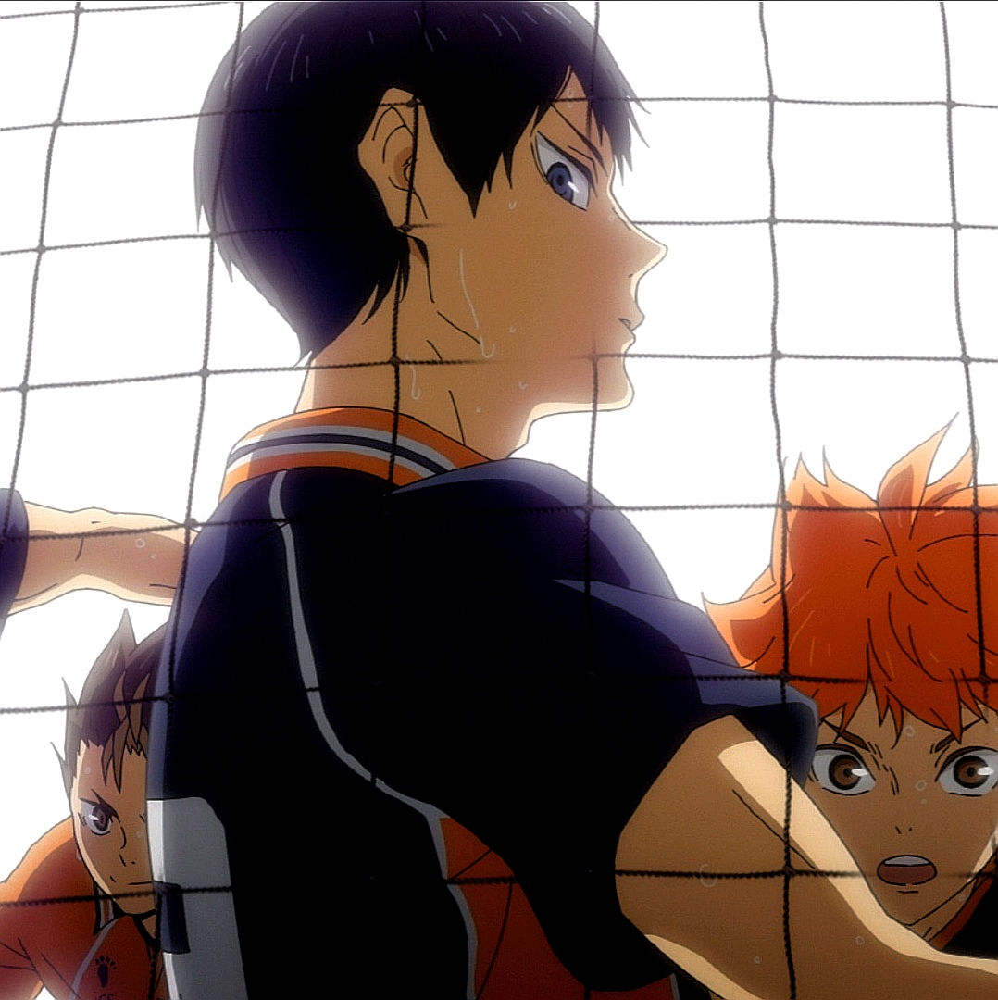
山口忠， 日本动漫《排球少年！ 》及衍生作品中的角色 ，在第3集中出场。 乌野高校排球部的副攻手。 看人物信息 山口忠和发小 月岛萤 一起加入排球部，曾因技术不突出，在所有高一选手里只有自己一个人不是首发队员而沮丧过。 但是在见识了 嶋田诚 的跳飘球后拜其为师，学习发球技术，最后成为队里的关键分发球员。
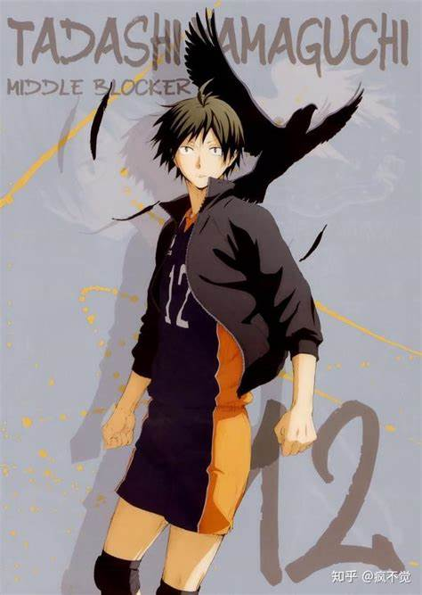
乌野高中二年级生：西谷夕、田中龙之介
西谷夕、田中龙之介为二年级的乌野高中排球队队员，西谷夕的位置为自由球员，从国中开始就得到过「最佳自由球员」的称号，拥有优异的反射神经，性格热血、冲动，既是守护神也是队伍中的气氛制造者。
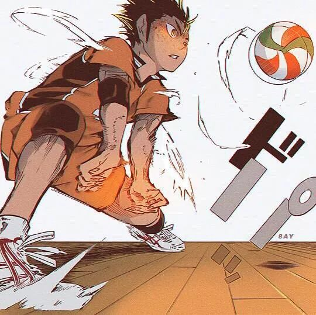
田中龙之介的最大特征为小平头，个性冲动火爆，其实对后辈非常贴心，在队中扣球力量仅输给东峰旭，喜欢着三年级的排球队经理清水洁子。
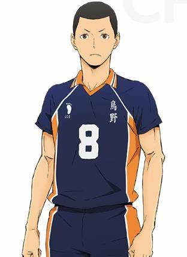
清水洁子（日文名：しみず きよこ），日本漫画《排球少年！ 》及衍生作品中的角色。 乌野高校排球部的美女经理，在学校很有人气，经常带着一副眼镜，很少说话，给人一种由内而外的知性美。 清水洁子初中时期是位跨栏选手，后来接受了泽村大地的邀请加入的排球部。
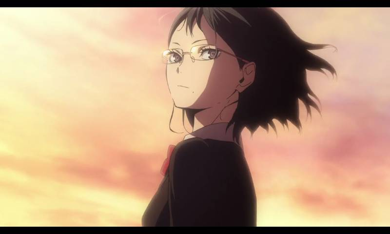
乌野高中三年级生：泽村大地、菅原孝支、东峰旭
泽村大地为乌野高中排球队的主将，性格温和可靠，但只要被激怒就会非常可怕，比起攻击更擅长守备，就像是「地基」般守护着整个团队。
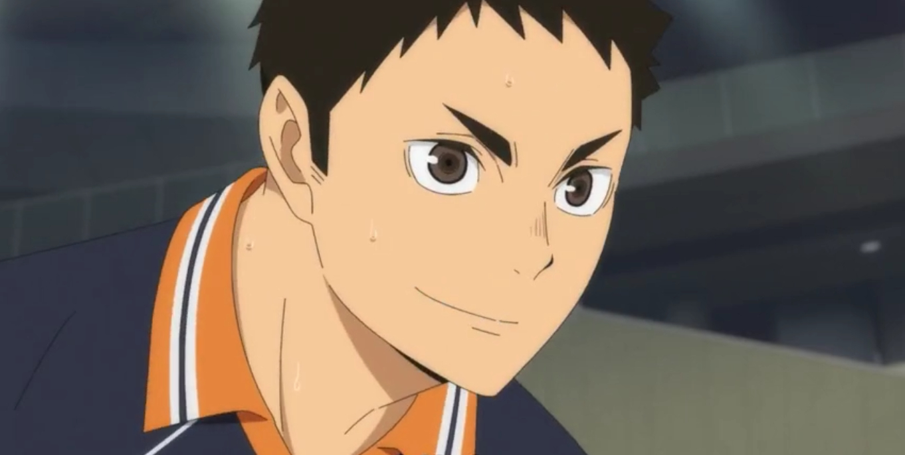
菅原孝支是排球队副主将，在日向、影山等一年级队员加入前，作为队伍的正式举球员，个性体贴又有包容心，相较于正经的泽村，有时菅原会刻意胡闹，以缓和场面。
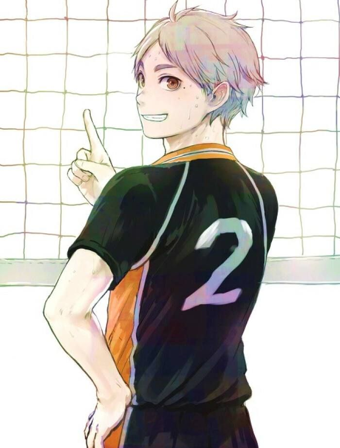
东峰旭是扣球充满力量的队上王牌，因为留有小胡子和长发，外表恐怖常遭人误解，其实内心纤细又容易受伤，但充满责任感。在一场比赛中因不断被拦网封杀，输了比赛后对自己产生厌恶一度退出队伍，后来在日向与影山的激励下回归。
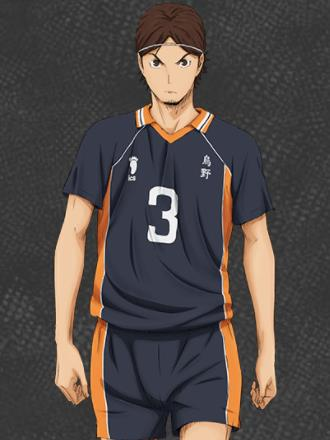